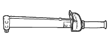

Sliding door preparation [Installation]
 | 09010-3C120 | Torxo socket wrench set |
 | (09013-1C110) | Torxo socket wrench T25 |
| (09013-1C120) | Torxo socket wrench T30 |
| Letting tool set for side malls | ||
 | 9000 | Te-prim-bubble disk Treated as a takty Co., Ltd. |
 | 9884 | holder 3m9884 Treated as a takty Co., Ltd. |
 | QL-25n | QL Torque wrench (25n) Banzai Co., Ltd. |
| QL-50N | QL Torque wrench (50N) Banzai Co., Ltd. |
|  | SF3N | F -type torque wrench (3n · m) Banzai Co., Ltd. |
| Polybera (width 75mm) | ||
| Remouverbonde 7 (0.5L) | ||
| Toyota genuine body grease | ||
| White gasoline | ||
| Infrared ramp | ||
| Brush | ||
| Protective tape | ||
| Masking tape | ||
| Emergency glasses | ||
| Butyl tape set V93500616 Treated as a takty Co., Ltd. |